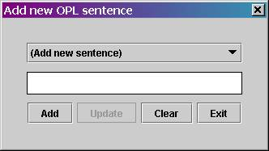
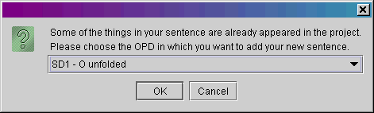

OPL to OPD - User Guide
Select Generation > OPD. "Add new OPL sentence" window will be opened, enabling you to add a new OPL sentence.

Write the OPL sentence in the text box (don't forget the dot at the end of the sentence). Press the ADD button or 'Enter' when finished.
If one or more Objects or Processes in your sentence appear at several diagrams, you should define the diagram, where the new OPL sentence will be generated. Choose the required diagram from the inquiry window and press the "OK" button.

In order to erase the sentence from the text box press the CLEAR button.
In order be able to drawing OPD you need to leave the application. In order to leave the application press the EXIT button.